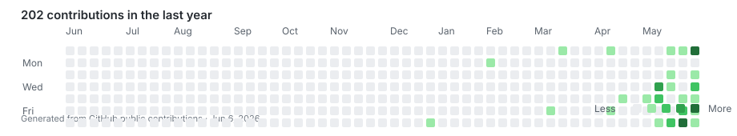

02 / GITHUB
Repositories and contribution graph
Repositories ->Public GitHub profile details, recent repositories, and the public contribution snapshot live here.

Public repos
-
Followers
-
Latest push
-